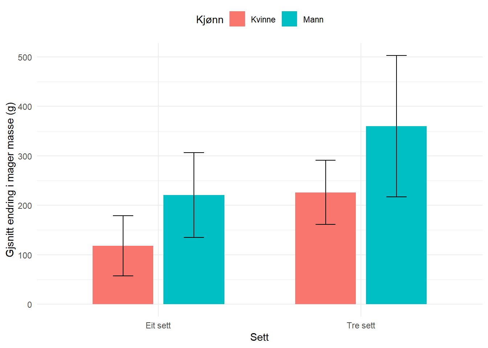
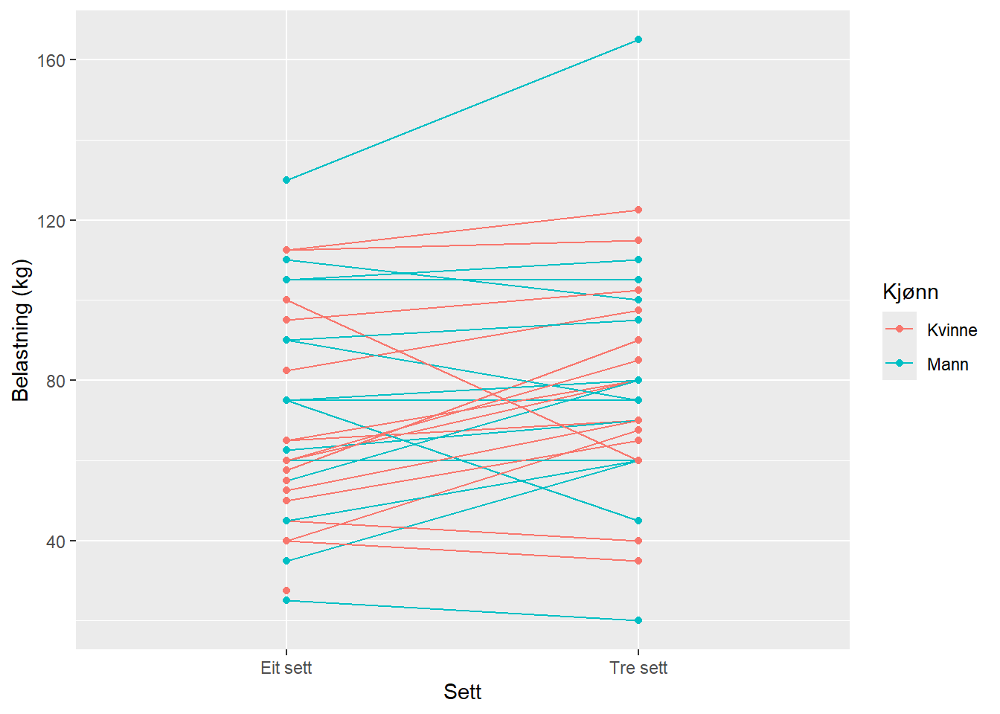

| Alder (År) | Høgde (cm) | Vekt (kg) | |
|---|---|---|---|
| Kvinne n = 18 | 22(1.3) | 167.7(6.9) | 64.4(10.4) |
| Mann n = 16 | 23.6(4.1) | 182.9(5.9) | 75.8(10.7) |
5 Arbeidskrav 5: Analysere repiterte målingar eksperimenter
(År) Høgde
5.1 Assignment overview
In this assignment you will analyse and report on trial investigating the effect of resistance training volume on lean mass and muscle strength. The data are part of the exscidata package and can be accessed as data("strengthvolume") and data("dxadata"). Read the instructions carefully!
Below you will find a basic outline of the report and example code that we worked on in class.
5.2 Introduksjon
Styrketrening har gjennom tida blitt eit vanleg fenomen i kvardagen til mange menneske. (Kraemer et al. 2017) definerte styrketrening som eit generelt omgrep som viser til trening der ein må utøve kraft mot ei motstand, og sa det har vist seg å vere ein særs effektiv metode for å auke muskelstyrke og muskelvekst. Korleis ein skal trene styrketrening har over tid blitt studert for å finne svar på kva som er optimalt når det kjem til volum, frekvens og intensitet for å få best mogleg muskelvekst og forbetring av muskelstyrke. (Berger 1962) var tidleg ute med å undersøke ulike styrketreningsmetodar då han fordelte college studentar i ni grupper som trena med forskjellige sett og repetisjonar, og konkluderte med at tre sett med seks tunge repetisjonar førte til den største forbetringa i muskelstyrken.
I seinare tid har det blitt gjort studiar som ikkje er einige i sine svar på kva som er optimalt treningsvolum for forbetring av maksstyrke og muskelvekst. Studien av (Ostrowski et al. 1997) som undersøkte forskjellen på tre ulike treningsvolum kategorisert som låg, middels og høg, og konkluderte med at det ikkje var forskjell mellom dei metodane. I nyare tid har andre studiar funne ut at eit større treningsvolum i form av tre eller seks sett mot eit sett per øvelse er betre for å auke muskelstyrke og muskelmasse (Galvão and Taaffe 2005), (Humburg et al. 2007) og (McBride, Blaak, and Triplett-McBride 2003). Etter desse har studien til (Cannon and Marino 2010) lagt fram sine funn om at høgt treningsvolum ikkje fungerte betre for muskelstyrke enn lågt treningsvolum. Dei sprikande resultata frå studiane gjer at det er behov for tydeligare svar. I denne rapporten blei det sett på effekten frå eit mot tre setts protokoller på muskelstyrke og mager kroppsmasse regionalt ved hjelp av eit «within-participant» design. Hypotesen min er at motstandstrening med tre sett vil gi større effekt på maksimalstyrke og regional mager masse.
5.3 Metode
5.3.1 Forsøkspersoner og studieoversikt
Forsøkspersonane i denne studien var 34 friske menneske mellom 18 – 40 år som gjennomførte ein intervensjonsperiode på 12 veke. Info om deltakarane ligger i Table 5.1. Studien nyttar seg av «within-participant» design der forsøkspersonane gjennomførte motstandstrening på eit bein i gongen for å samanlikne responsen frå eit og tre sett trenings protokoll. Alle fekk tilfeldig fordelt kva slags bein som skulle bruke tre og eit sett i alle øvelsane gjennom intervensjonsperioden.
5.3.1.1 Muskelstyrke og mager kroppsmasse
For å måle maksstyrke blei det brukt styrketest i form av å måle belastning i kilogram på ein repetisjon maksimum (1RM) av beinpress. For å måle mager kroppsmasse regionalt for beina blei det brukt dual-energy X-ray absorptiometry (DXA) test for å bestemme kroppssamansetninga. Testane vart utført ved baseline (pre) og etter 12 veke (post).
5.3.1.2 Treningsprotokoll
Ein standardisert oppvarming på fem minutt sykling på ergometersykkel, i tillegg til ti repetisjonar av armhevingar(individuelt tilpassa), sit-ups, rygghev og knebøy med kroppsvekt tilsvarande ~50% av (1RM) vart brukt for alle forsøkspersonar før alle økter. I hovuddelen av økta blei beina trent med motstandsøvelsane i følgande rekkefølge: ein fots beinpress, hamstring curl og beinspark, før det blei gjort to sett med benkpress, nedtrekk og endten skulderpres eller sittande roing. Pusane mellom sett var 90 – 180s. I beinøvelsane blei eit sett foten brukt mellom det andre og tredje settet til tre sett foten. Treningsintervensjonen følgde ein progressiv auking i treningsintensitet ved to veker med 10RM, tre veker med 8RM, og sju veker med 7RM i den rekkefølga. Det meste av treningsøktene blei overvaka av forskarteamet og alt som ikkje blei gjennomført med tilsyn vart nøye loggført og vurdert. Etter det var gjennomført ni treningsøkter vart alle veker med tre treningsøkter gjennomført med ein redusert økt tilsvarande 90% av dei to andre. Minst 48 timar skilte økter med maksimal innsats, medan minst 24 timar skilde submaksimale økter (90%).
5.3.2 Data analyse og statistikk
Det blei brukt para t-test for å samanlikne gjennomsnittleg endring frå pre til post test for tre sett mot eit sett for både beinpress og mager kroppsmasse testane.
5.4 Resultat
5.4.1 Mager kroppsmasse
Den gjennomsnittlige differansen i endring for regional mager kroppsmasse i beina mellom tre og eit sett var 122.8 (95% CI: [8.6, 237.0], P-value = 0.036, t33 = 2.19) til fordel for tre sett.
| Endring eit sett | Endring tre sett | Forskjell mellom eit og tre sett | |
|---|---|---|---|
| Kvinne | 117.9 | 225.9 | 107.9 |
| Mann | 220.6 | 360.1 | 139.5 |

5.4.2 Maksstyrke
Den gjennomsnittlige differansen i endring for maksstyrke mellom tre og eit sett var 6.8 (95% CI: [0.7, 12.9], p-value = 0.031, t30 = 2.26) til fordel for tre sett.
| Endring eit sett | Endring tre sett | Forskjell mellom eit og tre sett | |
|---|---|---|---|
| Kvinne | 67.2 | 79.7 | 9.2 |
| Mann | 75.8 | 81.6 | 4.2 |

5.5 Discussion
5.5.1 Generell oppsummering av resultata
I denne rapporten har det blitt undersøkt effekten av motstandstrening i form av tre sett mot eit sett per øvelse over ti veker. Resultata frå den statistiske analysen viser at tre sett har større effekt for å auke maksimal styrke og regional mager kroppsmasse enn eit sett, noko som stemme overeins med min hypotese.
5.5.2 Maksimalstyrke
Maksimalstyrke blei i denne rapporten målt som 1RM i beinpress og hadde signifikant større forbedring for tre sett samanlikna med eit sett. Resultata kan sjåast i likheit med (Galvão and Taaffe 2005) og (Humburg et al. 2007) som også såg større forbetringar for tre sett mot eit sett (korleis dei målte maksstyrke?). (McBride, Blaak, and Triplett-McBride 2003) såg også like resultat i samanlikning av høgt volum samanlikna med lågt vulum, då dei såg på seks sett mot eit sett.
5.5.3 Mager kroppsmasse
5.6 Conclusion
(Ostrowski et al. 1997) sa at høgt volum ikkje hadde noke å sei
5.7 Referanser
Berger, Richard. 1962. “Effect of Varied Weight Training Programs on Strength.” Res. Q. Am. Assoc. Health Phys. Educ. Recreat. 33 (2): 168–81.
Cannon, Jack, and Frank E Marino. 2010. “Early-Phase Neuromuscular Adaptations to High- and Low-Volume Resistance Training in Untrained Young and Older Women.” J. Sports Sci. 28 (14): 1505–14.
Galvão, Daniel A, and Dennis R Taaffe. 2005. “Resistance Exercise Dosage in Older Adults: Single- Versus Multiset Effects on Physical Performance and Body Composition.” J. Am. Geriatr. Soc. 53 (12): 2090–97.
Humburg, Hartmut, Hartmut Baars, Jan Schröder, Rüdiger Reer, and Klaus-Michael Braumann. 2007. “1-Set Vs. 3-Set Resistance Training: A Crossover Study.” J. Strength Cond. Res. 21 (2): 578–82.
Kraemer, William J, Nicholas A Ratamess, Shawn D Flanagan, Jason P Shurley, Janice S Todd, and Terry C Todd. 2017. “Understanding the Science of Resistance Training: An Evolutionary Perspective.” Sports Med. 47 (12): 2415–35.
McBride, Jeffrey M, John B Blaak, and Travis Triplett-McBride. 2003. “Effect of Resistance Exercise Volume and Complexity on EMG, Strength, and Regional Body Composition.” Eur. J. Appl. Physiol. 90 (5-6): 626–32.
Ostrowski, Karl J, Greg J Wilson, Robert Weatherby, Peter W Murphy, and Andrew D Lyttle. 1997. “The Effect of Weight Training Volume on Hormonal Output and Muscular Size and Function.” The Journal of Strength & Conditioning Research 11 (3): 148–54.